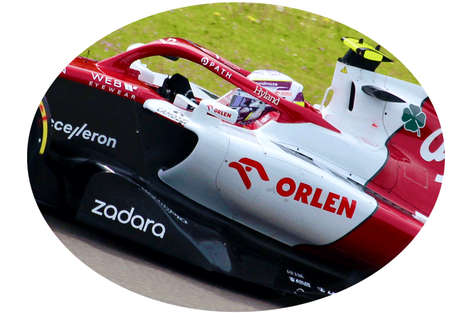
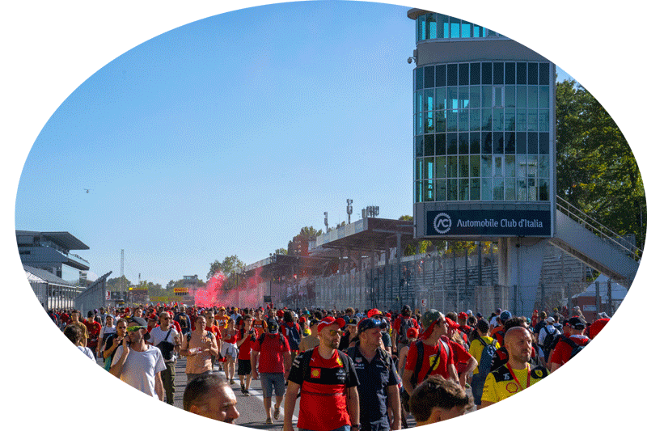

Zhou Guanyu, born on May 30, 1999, in Shanghai, China, is a talented Formula 1 driver whose meteoric rise in the world of motorsport has captured the attention of fans and industry experts alike. His story is one of passion, dedication, and unwavering determination to achieve his dream of racing at the highest level.
Early Life and Racing Beginnings:
Zhou's journey into the world of motorsport began at a young age when he discovered a deep love for racing. Introduced to karting as a child, he quickly exhibited his natural talent for speed and precision on the track. As he honed his skills, it became evident that Zhou had the potential to make a significant impact in the racing world.
Transition to Single-Seaters:
Zhou's transition to single-seater racing marked a pivotal moment in his career. In 2014, he made his debut in the Asian Formula Renault Championship, showcasing his ability to compete at a higher level. His remarkable performances earned him recognition and the opportunity to further advance in motorsport.


Notable Achievements:
Throughout his career, Zhou Guanyu has achieved numerous milestones, including race wins and podium finishes in various racing categories. His breakthrough moment came when he secured a dominant win in a highly competitive championship, solidifying his status as a rising star in the racing world.
Joining the Junior Team:
Zhou's talent didn't go unnoticed, and he caught the eye of a prominent Formula 1 team, which led to him joining their junior driver program. This significant step brought him one step closer to realizing his dream of competing in Formula 1.
Graduating to Formula 2:
In 2019, Zhou made his debut in the FIA Formula 2 Championship, a vital stepping stone to Formula 1. Competing against some of the world's best young drivers, he consistently showcased his skills and determination, earning respect and recognition within the motorsport community.
Highlights
Achieving the Formula 1 Dream:
The pinnacle of Zhou Guanyu's career came when he secured a coveted seat in Formula 1 with Alfa Romeo in 2022. This achievement marked a historic moment, as he became the first Chinese driver to compete in Formula 1, carrying the hopes of a nation on his shoulders.
Beyond his impressive on-track performances, Zhou Guanyu is known for his strong work ethic, dedication to physical fitness, and unwavering belief in his abilities. He represents the new generation of racers who combine talent with determination to make their mark on the world stage.
Guanyu's journey from a young karting enthusiast in Shanghai to a Formula 1 driver is a testament to the power of passion and perseverance in the pursuit of one's dreams. His story continues to inspire racing enthusiasts around the world, and his future in Formula 1 holds the promise of even greater accomplishments on the track.